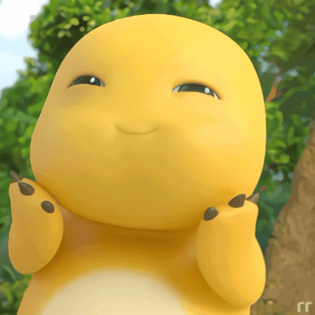

"Zona rebahan khusus. Tinggalkan sebentar beban kerjaan dan tugas jadi kakak yang kuat di luar. Di sini kamu cuma perlu senyum lihat Nailong."
🔒 Kejutan tertutup rapat! (Tekan tombol Titip Capek dulu)
🔒 Ada yang menunggu di bawah... (Pilih salah satu beban di atas!)
🔒 Jalan buntu! (Habiskan dulu amarahmu dengan memukul tombol di atas)
🗑️ Kotak Curhat Ajaib
Tulis semua uneg-unegmu di sini, lalu kita bakar!
📠 Scanner Hati
Cek dulu seberapa capek hati kamu hari ini.
👆
🚨 HASIL ANALISIS:
Terdeteksi 99% kelelahan dan pura-pura kuat.
Solusi Medis:
Segera self reward salad sayur, pesen sushi, jajan eskrim, atau tidur seharian!
🔒 Ruang Hiburan Terkunci (Gunakan Kotak Curhat ATAU Scanner Hati dulu)
🔒 Kejutan Terakhir Menunggu... (Panggil pasukan Nailong dulu di atas)